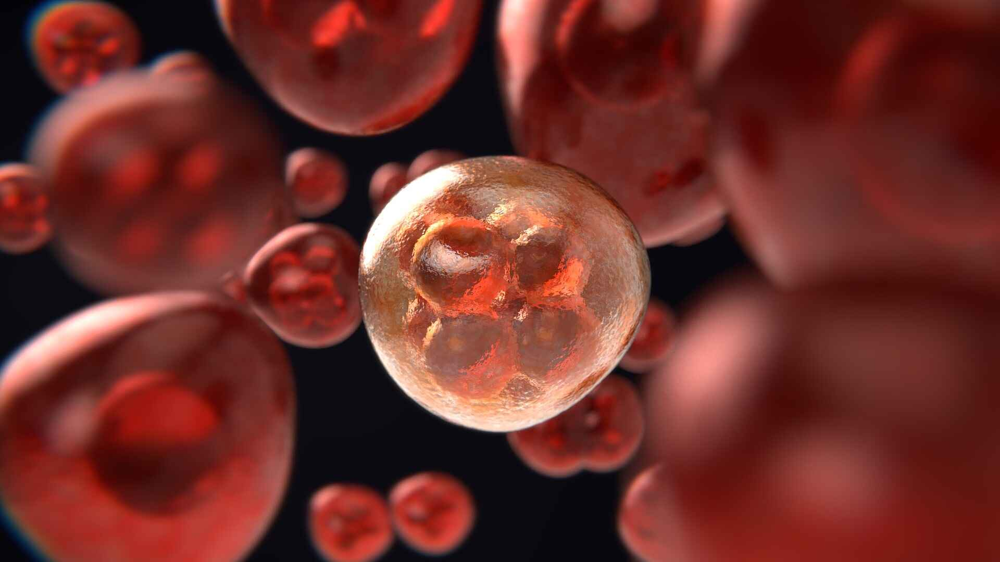

Herbal Cancer Support in Bangalore (Arbuda Chikilsa)
Our integrative herbal cancer support programme focuses on improving patient strength and quality of life alongside oncology care — supporting immunity and helping manage the side effects of chemotherapy & radiation.